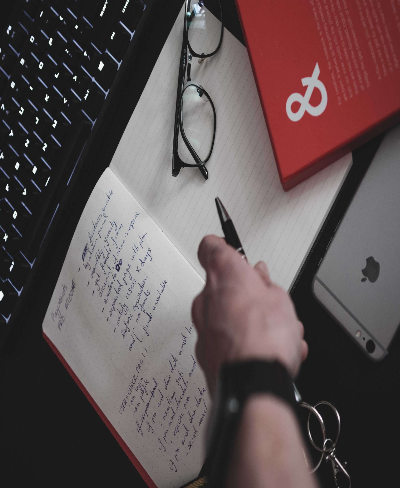
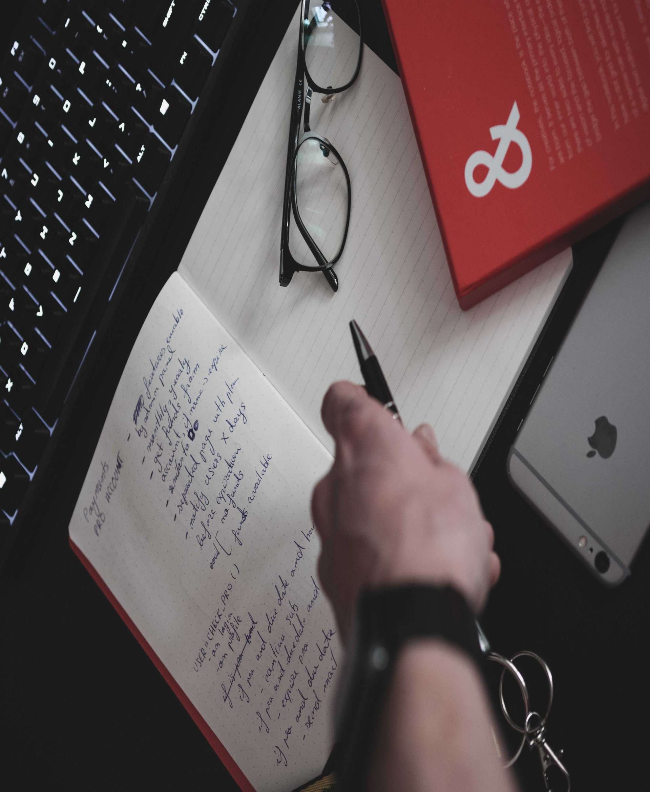
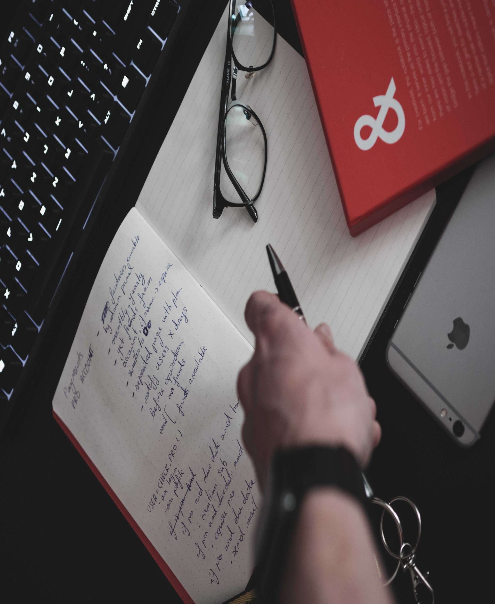

.jpg) 

About Me

About Me
Age: 20
Location: Liverpool
Languages: Java/Python/JavaScript
Added Skills: Git/AWS/HTML/CSS
keyboard_arrow_downVice President and Co-Founder of the Cyber Security Society at The University of Liverpool
Accomplishments
13th - TryHackMe - HackBack
University Education
The course I am currently enrolled in is 'Computer Science with Software Development' with a Year In Industry during the third year.
This course will provide me with all the skills I would need to be successful in the Computer Science sector.
Modules
Introduction To Programming
Introduction To Artificial Intelligence
Foundations of Computer Science
Graduates for the Digital Society
Object-Orientated Programming
Data Structures and Algorithms
Analytical Techniques for Computer Science
Computer Systems
Previous Education
BTEC completed at Cronton Sixth Form College (D*D*D*)
GCSE's completed at Wade Deacon High School (Including Maths and English)
Additional Interests
Music Fan and Guitar Player
Ruby fan / Widnes Vikings supporter
Public Speaking
Hackathons/CTF's